Lakehouse Architecture
Raw, cleaned and serving layers, with clear rules for how data moves between them. Schema changes, table layout and data quality checks are the main design decisions.

Data & AI Engineer
I'm Mert Ali ERENTÜRK, a Data & AI Engineer. I work on data pipelines, lakehouse design and LLM applications.
I'm also working on mobile apps and LangGraph workflows. I care about where the data comes from, what happens when a job fails, and how to check an AI output.
Raw, cleaned and serving layers, with clear rules for how data moves between them. Schema changes, table layout and data quality checks are the main design decisions.
How storage, distributed compute and orchestration fit together. Choosing batch or streaming based on the workload, rather than adding infrastructure by default.
Dependencies, incremental loads, retries and backfills. I pay particular attention to whether a failed run can be repeated without duplicating data.
API boundaries, events and shared state between services. Keeping interfaces clear enough that one component can change without forcing changes everywhere else.
Taking data through preparation, retrieval or inference, then evaluation. Recording which inputs, prompts and models produced a result makes debugging possible.
Retrieval, context assembly, tool calls and structured responses. Testing what the application should do when context is missing or a model gives an unusable answer.
State, routing and tool use in multi-step agent flows. Checkpoints and human review define where a workflow can pause, resume or ask for help.
Mobile interfaces, application state and API integration. I'm interested in how the client handles authentication, loading and failed requests.
Connecting retrieval and tool calls into repeatable workflows, then checking the outputs. LangGraph is part of this work.
Lakehouse layouts, data models and batch or streaming jobs. Understanding when incremental processing helps and how to recover after a failed run.